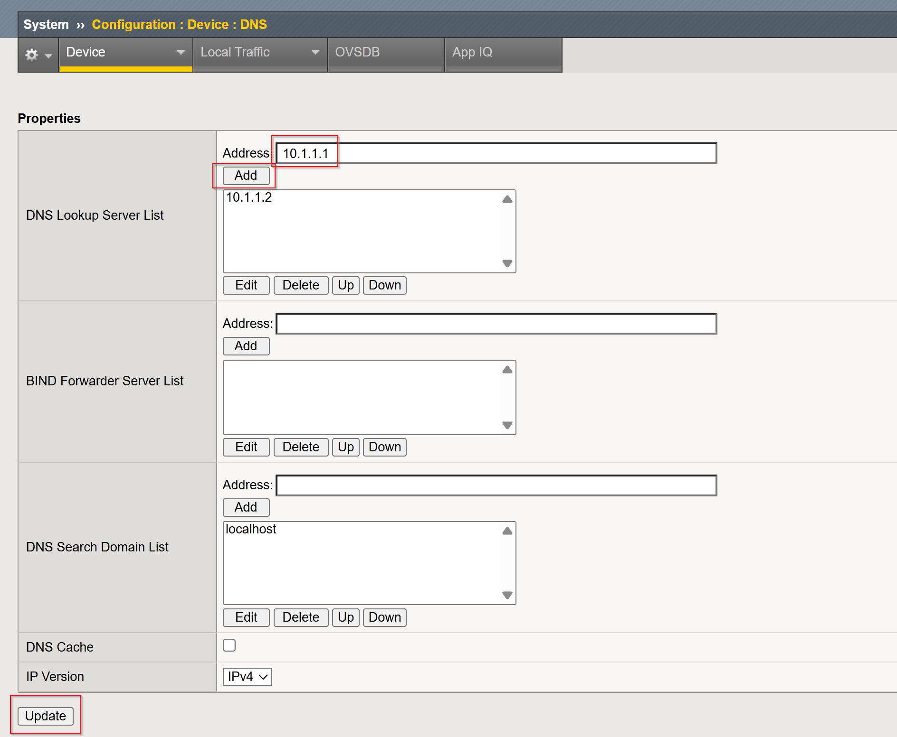
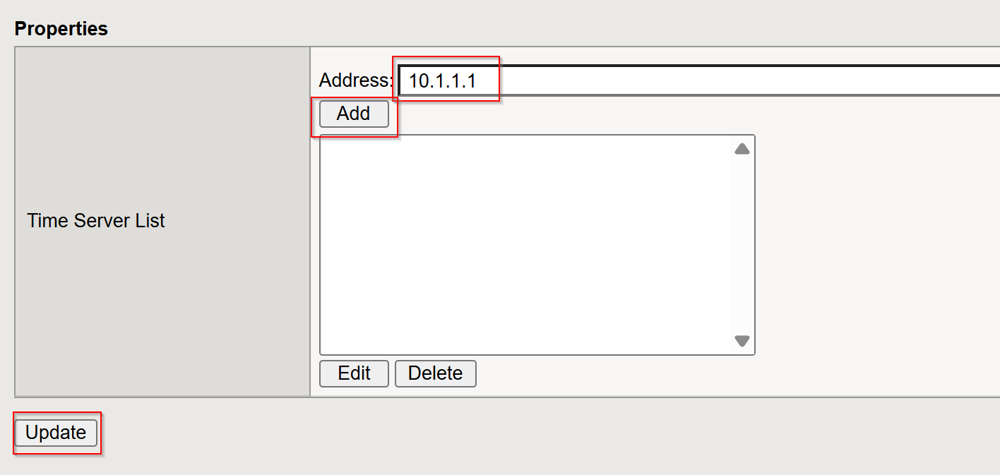
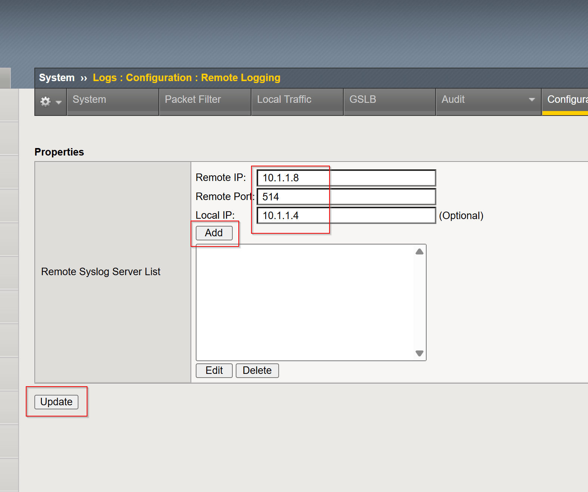
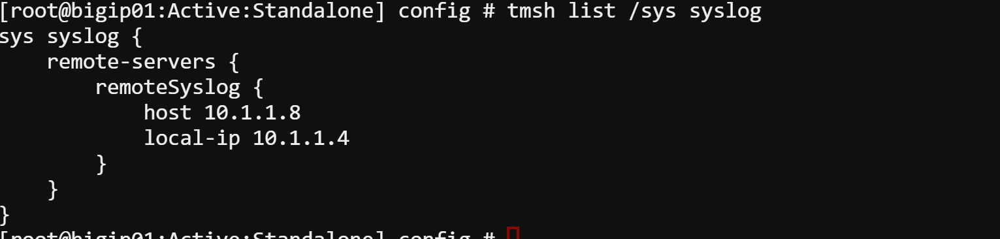
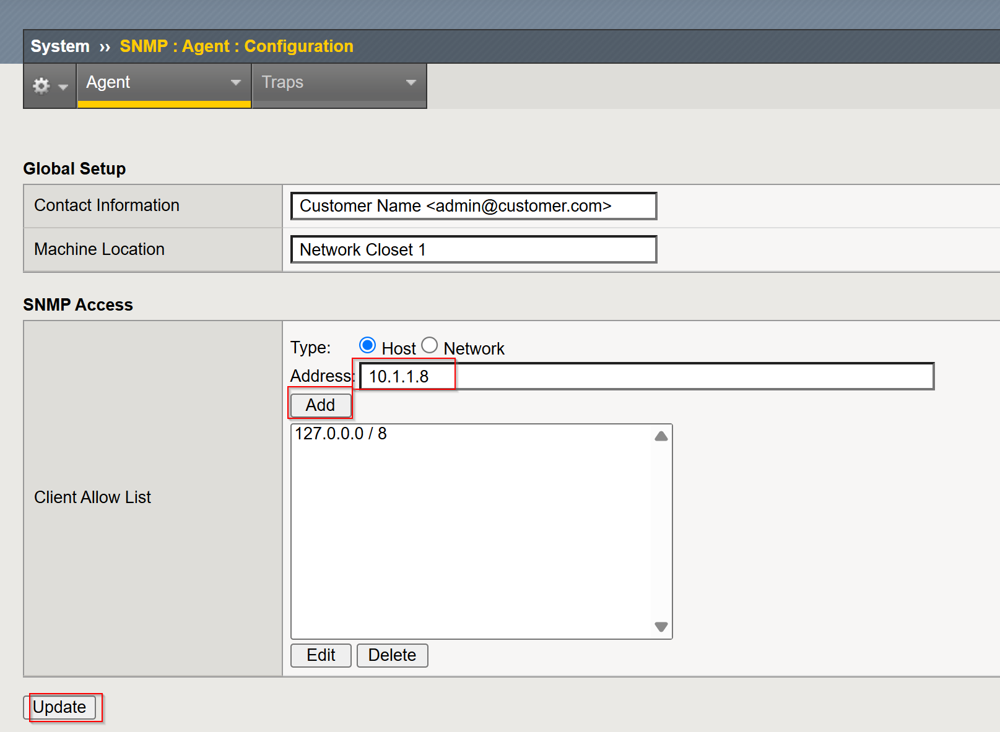
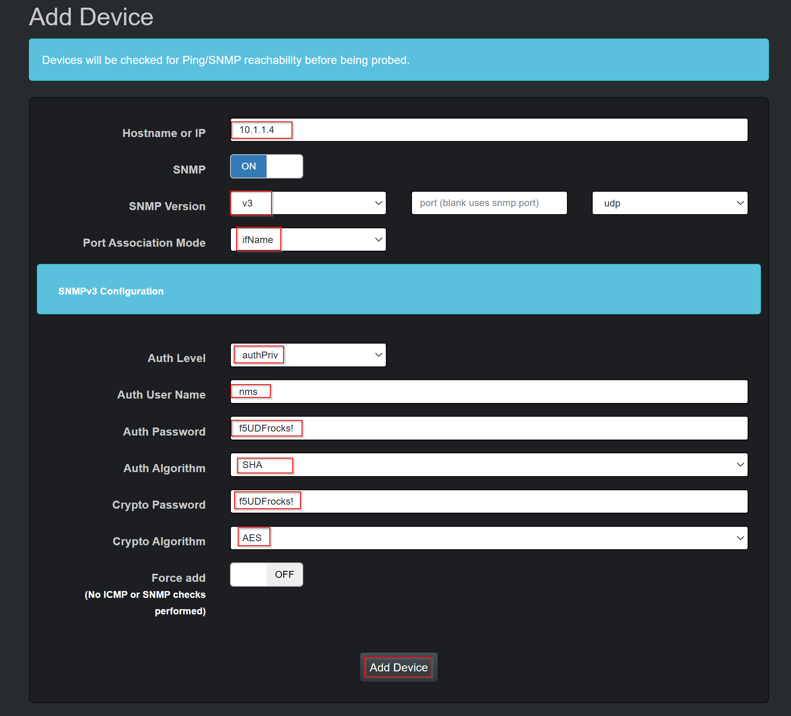
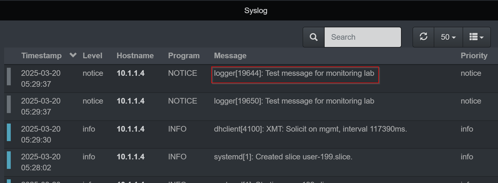
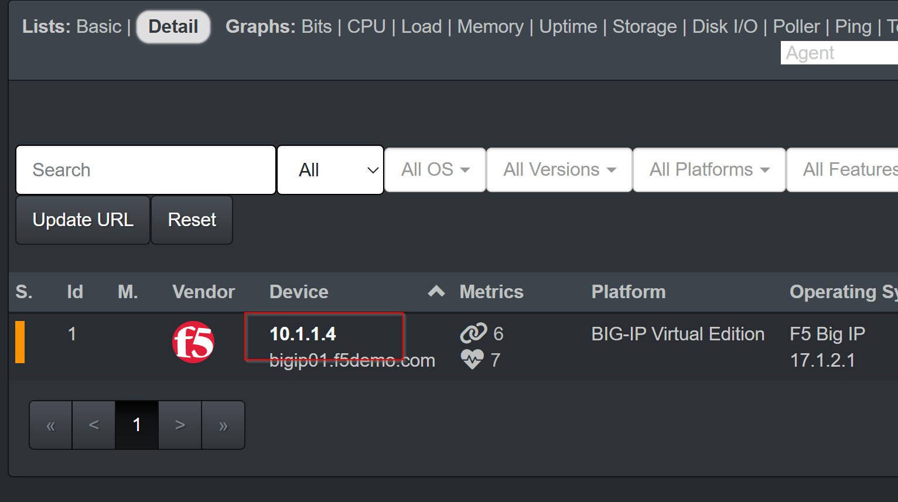
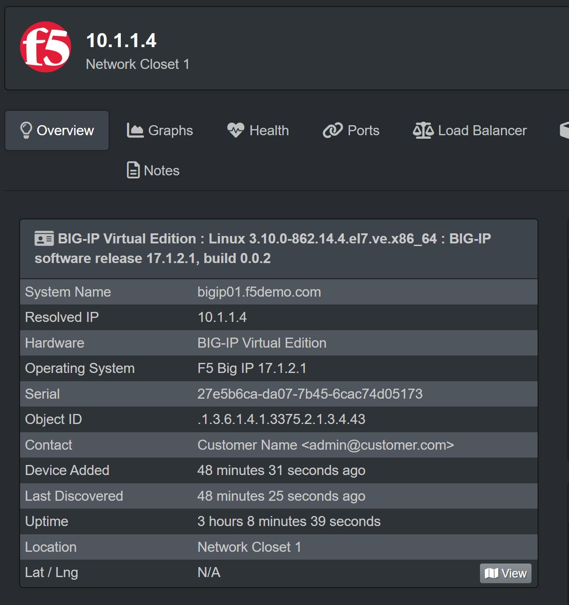

Unofficial - F5 Certification Exam Prep Material > Symposium 2026 - BIG-IP Administrator: Source | Edit on
Lab 8: BIG-IP Monitoring
Monitoring BIG-IP LTM Using Syslog and SNMP v3 with LibreNMS
This guide demonstrates how to configure Syslog and SNMP v3 on a BIG-IP LTM device and integrate it with LibreNMS for monitoring.
Lab Environment
The following components are available in the lab:
- BIG-IP LTM instance, accessible via SSH or GUI.
- LibreNMS Server, accessible and configured as a SNMP and syslog server.
- SNMP v3 credentials planned:
- Username: nms
- Authentication Password: f5UDFrocks!
- Authentication Alogrithm: SHA
- Crypto Password: f5UDFrocks!
- Crypto Alogrithm: AES
Pre-Lab: Configure DNS and NTP
Before starting the monitoring configuration, ensure that the DNS and NTP are properly set up on the BIG-IP LTM device to ensure proper connectivity and time synchronization.
Step 1: Configure DNS
DNS configuration allows the BIG-IP LTM to resolve domain names to IP addresses.
Configure Using the GUI
- Navigate to:
System > Device > Configuration > DNS - Click Add and enter the following details:
- DNS Server:
10.1.1.1(or your DNS server IP) - Click Update to apply the changes.


Configure Using TMSH
tmsh modify sys dns name-servers add { 10.1.1.1 }
tmsh save /sys config
Configure Using the GUI
- Navigate to:
System > Device > Configuration > NTP - Click Add and enter the following details:
- NTP Server:
time.nist.gov(or your NTP server IP) - Click Update to apply the changes.


Configure Using TMSH
tmsh modify sys ntp servers add { time.nist.gov }
tmsh save /sys config
Configuration Steps
This guide covers the following steps:
- Enable Syslog
- Enable SNMP v3
- Add BIG-IP to LibreNMS
- Verify Monitoring
Step 1: Enable Syslog
Syslog enables the BIG-IP LTM to send operational and system logs to an external logging service.
Configure Using the GUI
System > Logs > Configuration > Remote Logging
Click Create and enter the following details:
- Remote IP:
10.1.1.8 - Remote Port:
514 - Local IP:
10.1.1.4
- Remote IP:
Click Add, then Update to save:

- Configure Using TMSH
tmsh modify /sys syslog remote-servers add { remoteSyslog { host 10.1.1.8 remote-port 514 local-ip 10.1.1.4 } } tmsh save /sys config
Verify the configuration:
tmsh list /sys syslog



Step 2: Enable SNMP v3
SNMP v3 provides secure authentication and optional encryption for tracking system metrics.
Configure Using the GUI
- Navigate to:
System > SNMP > Agent > Access (v3) - Click Add and enter the following details:
- Username:
nms - Authentication Protocol:
SHA - Authentication Password:
f5UDFrocks! - Privacy Protocol:
AES - Privacy Password:
f5UDFrocks!
- Username:
- Click Finish to save.

Navigate to:
System > SNMP > Agent > ConfigurationEnter the LibreNMS IP address in the Address field, and click Add, and Update.

Configure Using TMSH
tmsh modify sys snmp users add { nms { username nms oid-subset 1 auth-protocol sha auth-password f5UDFrocks! privacy-protocol aes privacy-password f5UDFrocks! } } tmsh modify sys snmp allowed-addresses add {10.1.1.8} tmsh save /sys config
Verify the SNMP configuration:
tmsh list /sys snmp users


Step 3: Add BIG-IP to LibreNMS
- Log in to LibreNMS.
- Click the
NMS device's > Access > NMS - Log in with username:
adminand password:f5UDFrocks!
- Click the
- Navigate to
Devices > Add Device. - Enter the following configuration:
- Hostname or IP:
10.1.1.4 - SNMP Version:
v3 - Port Association Mode:
IfName - SNMPv3 Configuration:
- Auth Level:
authPriv - Auth User Name:
nms - Auth Password:
f5UDFrocks! - Auth Alogrithm:
SHA - Crypto Password:
f5UDFrocks! - Crypto Alogrithm:
AES
- Auth Level:
- Hostname or IP:
- Click Add Device.


Step 4: Verify Monitoring
Verify that logs and metrics are collected correctly.
Syslog Verification:
Generate test logs from BIG-IP:
logger -p local0.notice "Test message for monitoring lab"Check your syslog on the LibreNMS server for entries from BIG-IP.
- Click
Overview > Dashboard > Default - The test syslog is searchable in the syslog panel

- Click
SNMP v3 Verification:
Log in to LibreNMS.
Click
Devices > All DevicesClick the IP address of BIG-IP01 (10.1.1.4)

Confirm the following information is visible:
- Hostname, device uptime, polling status, and device type.
- IP address, hardware version, and software details.



Summary
You have successfully configured Syslog and SNMP v3 on a BIG-IP LTM device and integrated it with LibreNMS for monitoring. Device logs and performance metrics—including CPU, memory, and network statistics—are now accessible in LibreNMS. You can leverage LibreNMS to track resource utilization and troubleshoot operational issues securely and effectively.